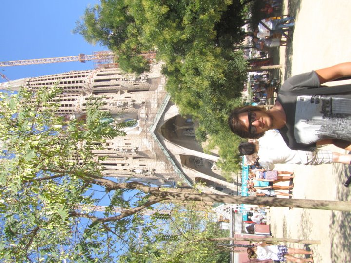
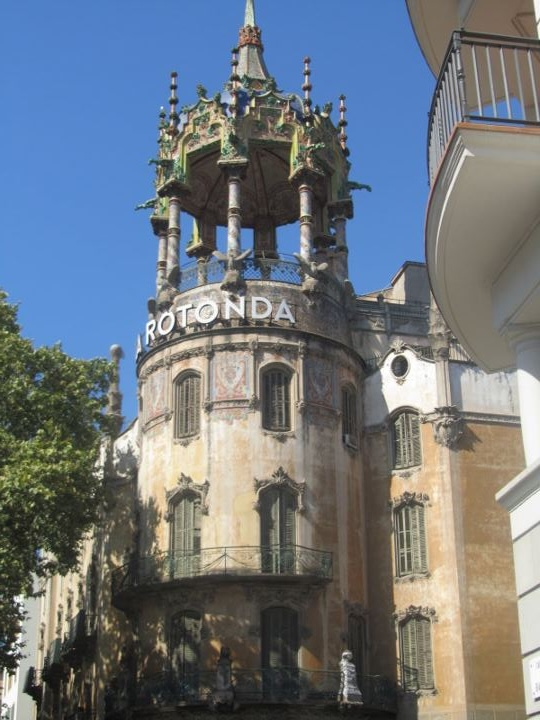
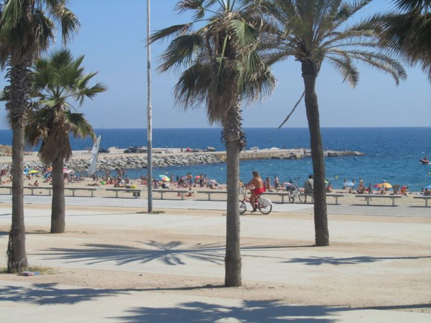

Exploring Barcelona: A Comprehensive Guide
Introduction
Barcelona, Spain's vibrant capital, is renowned for its stunning architecture, lively cultural scene, delectable cuisine, and picturesque beaches. The city seamlessly blends historic charm with modern innovation, making it a must-visit destination for travelers seeking a diverse and enriching experience.
A Brief History of Barcelona: Founded as a Roman city, Barcelona has evolved over centuries into a bustling metropolis. It has played a pivotal role in Spanish history, from the medieval era through the Spanish Civil War, and into the contemporary period. Today, Barcelona stands as a testament to Spain's rich heritage and dynamic progress.
Highlights
- Sagrada Família: Antoni Gaudí's masterpiece and an iconic symbol of Barcelona.
- Park Güell: A public park with stunning mosaics and architectural elements.
- La Rambla: A bustling street known for its lively atmosphere and street performers.
- Gothic Quarter: Historic heart of the city with narrow medieval streets.
- Casa Batlló: A modernist building designed by Gaudí, known for its unique facade.
- Barceloneta Beach: A popular beach offering sun, sand, and vibrant nightlife.
- Montjuïc Hill: Offers panoramic views, gardens, and cultural attractions.
Top Attractions
Sagrada Família
The Sagrada Família is Barcelona's most famous landmark, designed by the visionary architect Antoni Gaudí. This basilica, still under construction, features intricate facades and stunning interiors that reflect Gaudí's unique architectural style.
Park Güell
Park Güell is a public park system composed of gardens and architectural elements located on Carmel Hill. Designed by Gaudí, the park offers colorful mosaics, whimsical structures, and panoramic views of the city.
La Rambla
La Rambla is Barcelona's most famous street, stretching from Plaça de Catalunya to the Christopher Columbus Monument at Port Vell. It's lined with shops, cafes, and vibrant street performers, making it a lively area to explore.
Gothic Quarter
The Gothic Quarter is the oldest part of Barcelona, featuring narrow medieval streets, hidden squares, and historic buildings. Key attractions include Barcelona Cathedral and Plaça Reial.
Casa Batlló
Casa Batlló is a renowned building designed by Antoni Gaudí, located in the heart of Barcelona. Its unique facade and imaginative interiors showcase Gaudí's innovative approach to architecture.
Barceloneta Beach
Barceloneta Beach is one of Barcelona's most popular beaches, offering sunbathing, swimming, and a vibrant nightlife. It's also a great spot for water sports and enjoying fresh seafood at beachfront restaurants.
Montjuïc Hill
Montjuïc Hill offers panoramic views of Barcelona and is home to several attractions, including Montjuïc Castle, the Magic Fountain, and various museums and gardens.
Adventure and Activities
Barcelona offers a wide range of activities for adventure enthusiasts and those seeking unique experiences:
- Walking Tours: Explore the city's neighborhoods, architecture, and hidden gems through guided or self-led tours.
- Bike Tours: Discover Barcelona's attractions while cycling through its extensive bike paths.
- Water Sports: Enjoy activities like paddleboarding, jet skiing, and sailing at Barceloneta Beach.
- Hot Air Balloon Rides: Experience breathtaking views of Barcelona and the surrounding Catalonian landscape.
- Flamenco Shows: Immerse yourself in Spanish culture by attending authentic flamenco performances.
- Tapas and Wine Tours: Savor the flavors of Barcelona through guided culinary tours.
- Day Trips: Visit nearby destinations like Montserrat, Sitges, and Girona for diverse experiences.
- Nightlife: Experience Barcelona's vibrant nightlife in areas like El Raval, Eixample, and the Gothic Quarter.
- Shopping: Explore trendy boutiques, designer stores, and local markets like La Boqueria.
One of the most exhilarating activities is taking a hot air balloon ride over Barcelona, offering a unique perspective of the city's stunning skyline and coastal beauty.
Cultural Immersion
Engaging with Barcelona's rich cultural heritage provides a deeper understanding of its traditions and way of life. Participate in traditional Spanish dance workshops, art tours, and cultural ceremonies to gain insights into the city's vibrant culture.
Visiting local galleries and museums, such as the Picasso Museum and the Joan Miró Foundation, offers insights into both classical and contemporary Spanish art, fostering a greater appreciation for the region's creative expressions.
Food and Cuisine
Barcelona's culinary scene is a delightful mix of traditional Catalan dishes and innovative gastronomy. From bustling markets to elegant restaurants, the city caters to all tastes.
- Paella: A classic Spanish rice dish with seafood, chicken, or vegetables.
- Tapas: A variety of small dishes like patatas bravas, croquetas, and jamón ibérico.
- Bombas: Deep-fried potato balls filled with meat and topped with spicy sauce.
- Crema Catalana: A creamy dessert similar to crème brûlée.
- Fideuà: Similar to paella but made with short noodles instead of rice.
- Fresh Seafood: Enjoy dishes like grilled octopus, mussels, and prawns at beachfront restaurants.
- La Boqueria Market: Explore a wide array of fresh produce, meats, seafood, and local delicacies.
I highly recommend trying the tapas at El Xampanyet, where the vibrant atmosphere and delicious offerings create a memorable dining experience.
Practical Information
Transportation
Barcelona boasts an extensive and efficient public transportation system, making it easy to navigate the city and its surroundings. Here are the main transportation options:
- Metro: Barcelona's metro system is fast and covers most of the city. A single ticket costs approximately €2.40.
- Bus: Comprehensive bus network with routes covering all major areas. A single ticket costs around €2.40.
- Tram: Modern tram lines that connect various parts of the city. A single ticket costs approximately €2.40.
- Taxis: Available 24/7 with fares starting around €2.20 plus €1.10 per kilometer.
- Bike Rentals: Numerous bike-sharing services available for convenient city exploration.
- Train: Renfe trains connect Barcelona to other Spanish cities and nearby regions.
Ways to Get from Airport to City
If you're arriving at Barcelona-El Prat Airport, here are the main transportation options to get to the city center:
- Aerobús: Express bus service connecting the airport to Plaça de Catalunya. Cost: Approximately €5.90 one-way.
- Train (Rodalies R2 Nord): Connects the airport to Barcelona Sants station. Cost: Approximately €4.20 one-way.
- Taxi: Available 24/7 with a flat rate to the city center starting at €30.
- Private Transfer: Pre-booked services offering door-to-door convenience. Cost: Approximately €35-€50 depending on the service.
- Metro (Line L9 Sud): Connects the airport to various metro stations. Cost: Approximately €5.15 one-way.
Accommodation
Barcelona offers a wide range of accommodations, from budget hostels to luxurious hotels. Popular areas to stay include:
- Eixample: Known for its modernist architecture and upscale shops.
- Gothic Quarter: Historic area with narrow streets and vibrant nightlife.
- El Born: Trendy neighborhood with boutique shops and cafes.
- Barceloneta: Close to the beach with a lively atmosphere.
- Gràcia: Bohemian district with a local feel and unique plazas.
I stayed at a mid-range boutique hotel in El Born, which provided comfortable amenities and easy access to major attractions and dining options.
Budgeting
Barcelona is relatively affordable, though costs can vary depending on your lifestyle and preferences. A comfortable daily budget ranges from €50 to €100 ($75-$150 AUD), covering accommodation, meals, transportation, and activities.
Tips and Recommendations
Do’s and Don’ts
- Do: Purchase tickets for major attractions like Sagrada Família and Park Güell in advance to avoid long queues.
- Don’t: Carry large amounts of cash; use credit/debit cards and keep valuables secure.
- Do: Respect local customs and dress appropriately when visiting religious sites.
- Don’t: Leave belongings unattended, especially in crowded areas like La Rambla.
- Do: Learn a few basic phrases in Spanish or Catalan to enhance your interactions.
- Don’t: Engage in aggressive bargaining; prices are generally fixed in most establishments.
Packing List
- Lightweight, breathable clothing suitable for warm weather.
- Comfortable walking shoes for exploring the city's streets and attractions.
- Swimwear and beach essentials for Barceloneta Beach.
- Insect repellent and sunscreen to protect against sun and bugs.
- Reusable water bottle to stay hydrated.
- Power adapter for international plugs.
- Camera or smartphone for capturing memorable moments.
- Travel insurance documents for peace of mind.
- Basic first-aid kit.
- Portable charger for electronic devices.
Local Etiquette
Spanish and Catalan cultures emphasize politeness and respect. Always greet with a "Hola" or "Bon dia" and use "Por favor" (please) and "Gracias" (thank you) when interacting with locals. Avoid loud behavior in public places and dress modestly when visiting religious sites.
Visitor Testimonials
"Barcelona is a city that truly captivates! The architecture, the food, and the vibrant streets make every moment memorable."
"Exploring the Sagrada Família and enjoying tapas at local bars made my trip to Barcelona unforgettable. Highly recommend!"
Follow My Adventures
Stay connected and follow my journey through the links below: